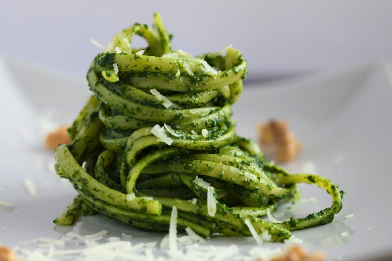

Pesto Pasta

Description
Do you have an appetite for simple and super delicious summer pasta?
Then you should definitely try these quick pasta with basil pesto and pine
nuts.
Not only is this simple dish super delicious, you can put it on the table
in 12 minutes with just 4 ingredients! Do not you think? Then try it out
directly.
Ingredients
- 250 g pasta (spaghetti)
- 1 tbsp pine nuts
- 1 pc onion
- 1 tbsp oil
- 1 pinch of salt
- 1 pinch pepper (freshly ground)
- 1 jar of Genovese pesto
- 5 cocktail tomatoes
Steps
-
For the pesto noodles, first boil the noodles in a saucepan of salted water until al dente. Then drain well in a sieve.
- For the pesto noodles, first boil the noodles in a saucepan of salted water until al dente. Then drain well in a sieve.
- Halve the cocktail tomatoes and place on top of the spaghetti as decoration.
Home